Overview
I designed and built the "Urban Turtle," an autonomous Over-Sand Vehicle that successfully navigated a sandy obstacle course without human intervention for the University of Maryland's ENES100 competition. Over one semester, I led the mechanical design effort — taking the vehicle from concept through 3 prototype iterations to a competition-ready machine with chain-driven 4WD, ultrasonic obstacle avoidance, and ArUco-based localization. I owned the full engineering cycle: SolidWorks CAD, UHMW machining, 3D-printed sensor mounts, and Arduino control software.

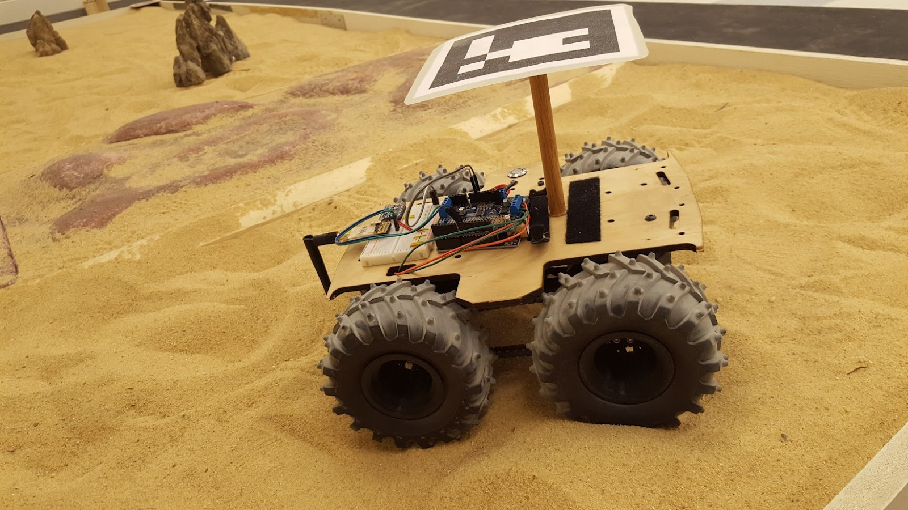
Chassis Structure
I designed a modular, field-serviceable chassis around a UHMW (ultra-high-molecular-weight polyethylene) base-plate — achieving a compact 270 × 280 × 121 mm footprint that maximized interior volume while meeting strict course size constraints.
- Adjustable chain-tensioning slots — eliminated full disassembly for drivetrain tuning, cutting field service time significantly.
- Underside battery access hole — enabled hot-swapping batteries without disturbing the electronics deck.
- Threaded inserts in the base-plate — provided repeatable, tool-free mounting for 3D-printed sensor brackets and enclosures.
- Sand-sealed electronics cover — protected the Arduino and wiring from debris ingestion during runs.
- Two-tier standoff architecture — separated the battery compartment (lower) from the controller deck (upper), lowering the center of gravity for stability on uneven sand.
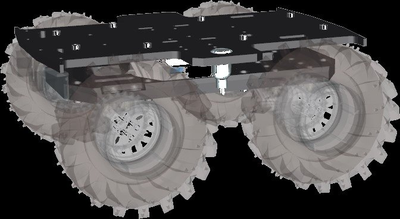
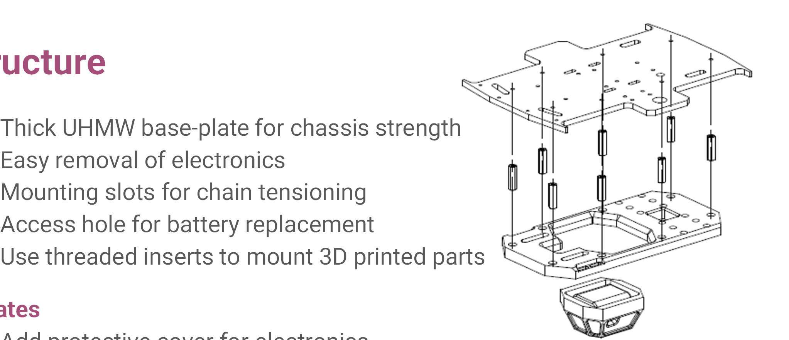
Propulsion System
I engineered a chain-driven four-wheel-drive drivetrain that delivered reliable traction across loose sand and enabled zero-radius skid-steer turns for tight obstacle avoidance.
- DC gear motors (265 RPM, 25 oz-in stall) — selected for high low-end torque critical to sand traversal.
- Roller chain & sprocket transmission — chosen over direct drive for mechanical advantage and shock absorption over terrain irregularities.
- Oversized aggressive-tread tires — maximized ground contact area to prevent the vehicle from sinking into soft sand.
- Skid-steer architecture — differential speed between left/right motor pairs enabled zero-radius turns in confined spaces.
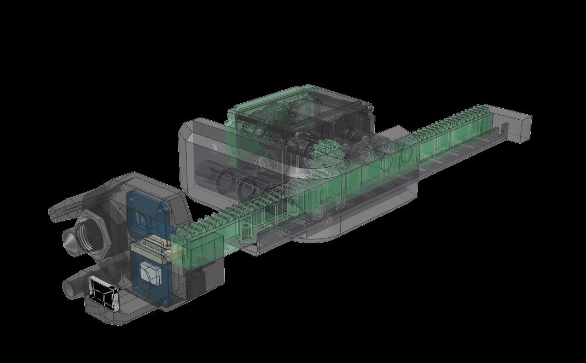
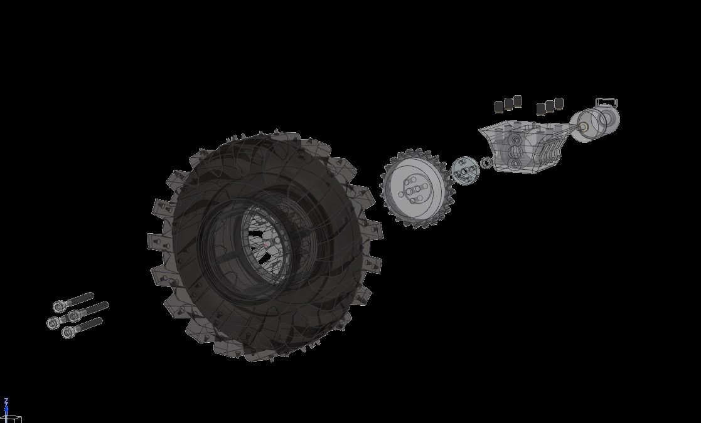
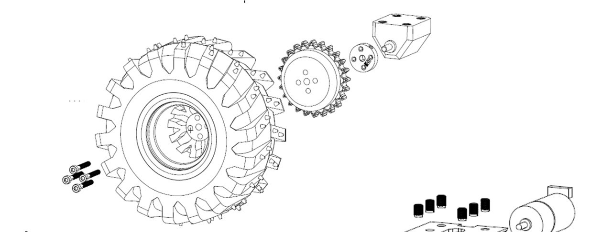
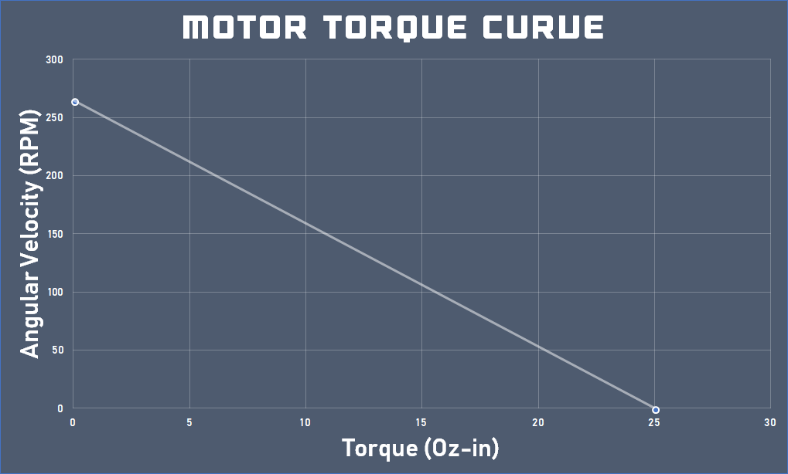
Autonomous Navigation
I developed the autonomous control stack on an Arduino microcontroller, fusing vision-based localization with ultrasonic obstacle detection to navigate the full sand course without human input.
- ArUco marker localization — achieved real-time x/y position and heading via an overhead vision system linked over WiFi, providing continuous closed-loop feedback.
- Ultrasonic obstacle avoidance — forward-facing sensors triggered evasive maneuvers when obstacles fell within a tuned threshold distance.
- Proportional waypoint sequencing — implemented a heading-error controller that computed differential motor corrections at each waypoint, keeping the vehicle on course.
- WiFi telemetry link — maintained a live connection for position updates and real-time debugging during test runs.
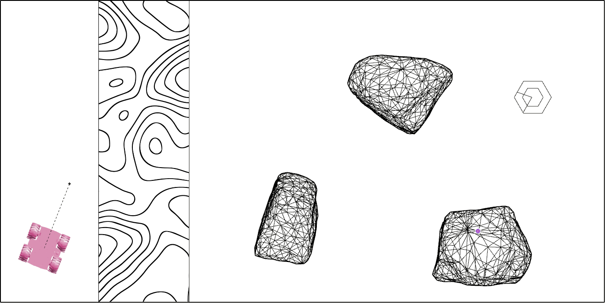
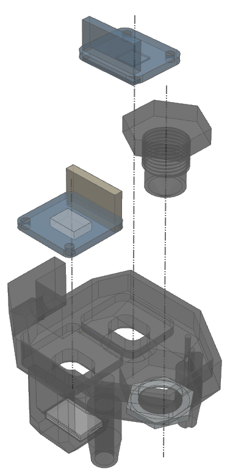
Design Iteration
I iterated through 3 prototypes, each time diagnosing a specific failure mode and redesigning to eliminate it — progressing from proof-of-concept to a competition-ready vehicle.
- Prototype v0 (metal chassis): Validated electronics and motor control, but small plastic wheels lacked traction and ground clearance on sand — identified tire sizing as the critical variable.
- Prototype v1 (wooden chassis): Upgraded to laser-cut wood with oversized off-road tires, dramatically improving sand performance. Exposed chain alignment and tensioning issues that demanded adjustable mounting.
- Final design (UHMW chassis): Incorporated every lesson learned — durable UHMW base-plate, adjustable chain-tensioning slots, 3D-printed sensor mounts, and a sealed electronics enclosure. Passed all competition requirements.
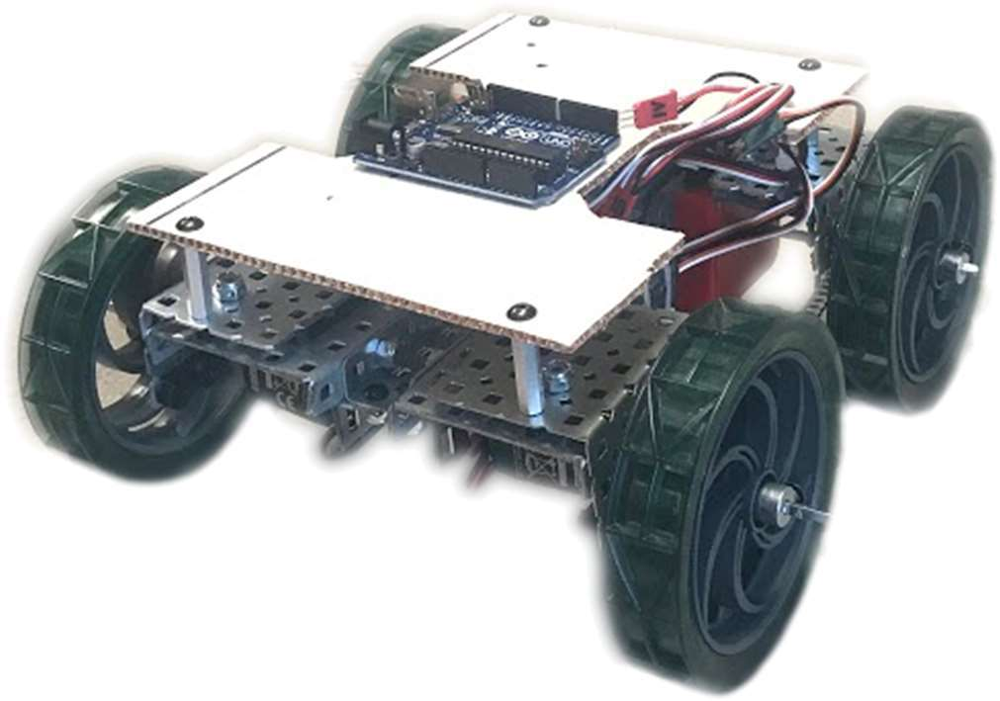
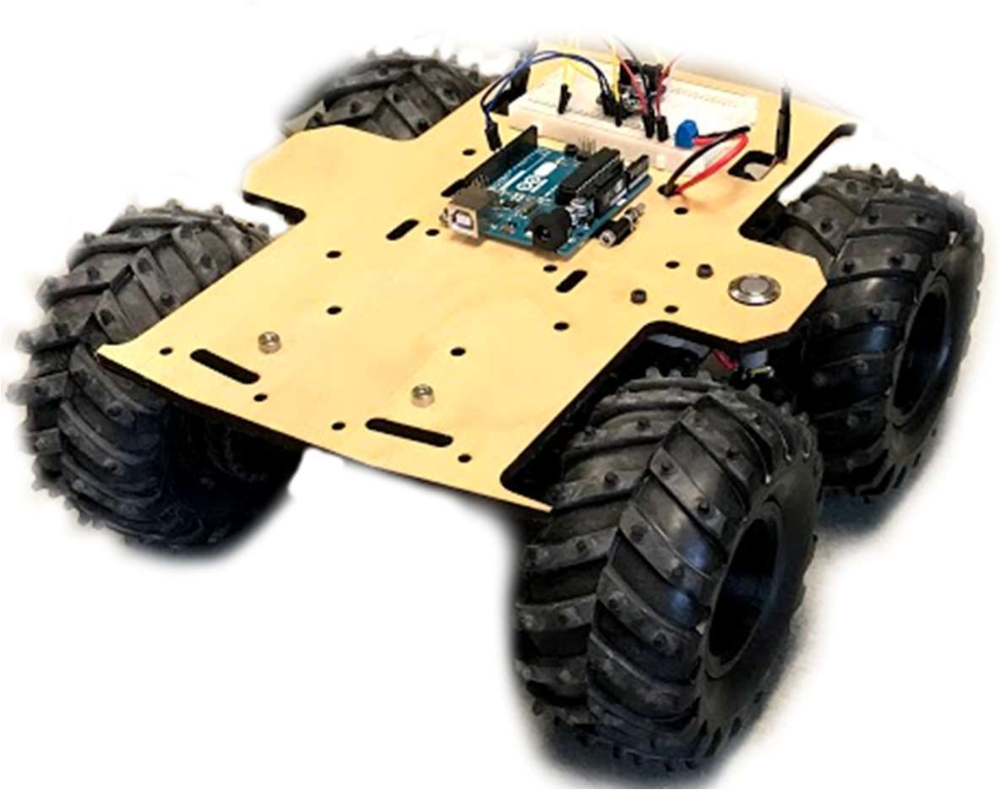
Mechanical Drawings
I modeled the entire vehicle in SolidWorks and produced fully dimensioned drawings for manufacturing and assembly verification. The layout optimized interior volume for batteries and electronics within the ENES100 size constraints.
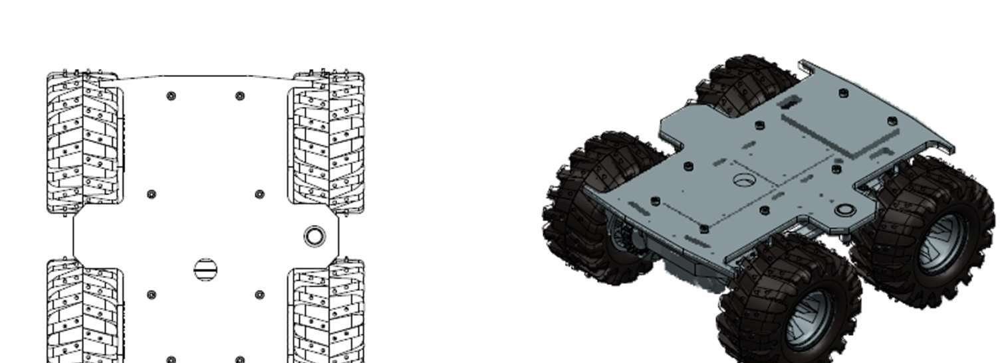
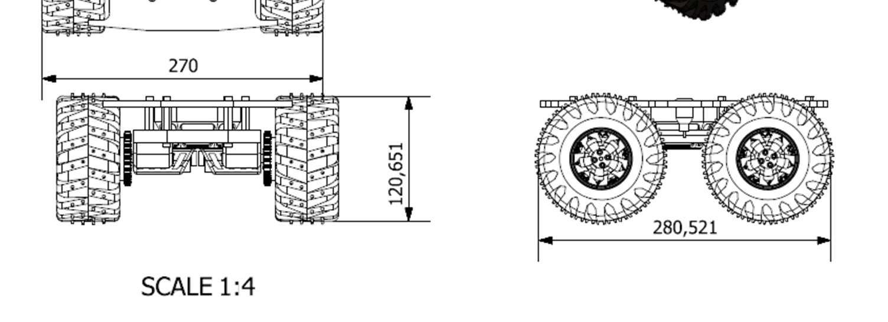